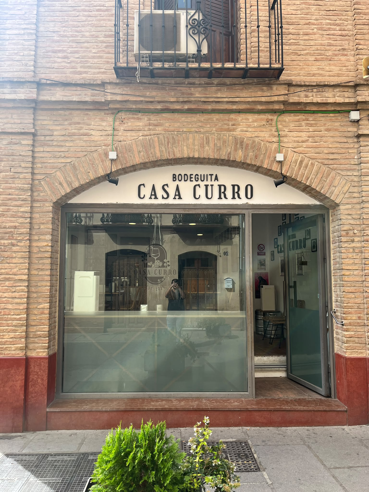
Tu mejor Bodeguita.
Reservar: 674 42 88 91Carta
Fotos
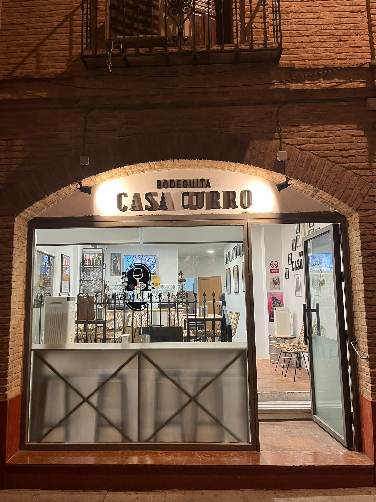
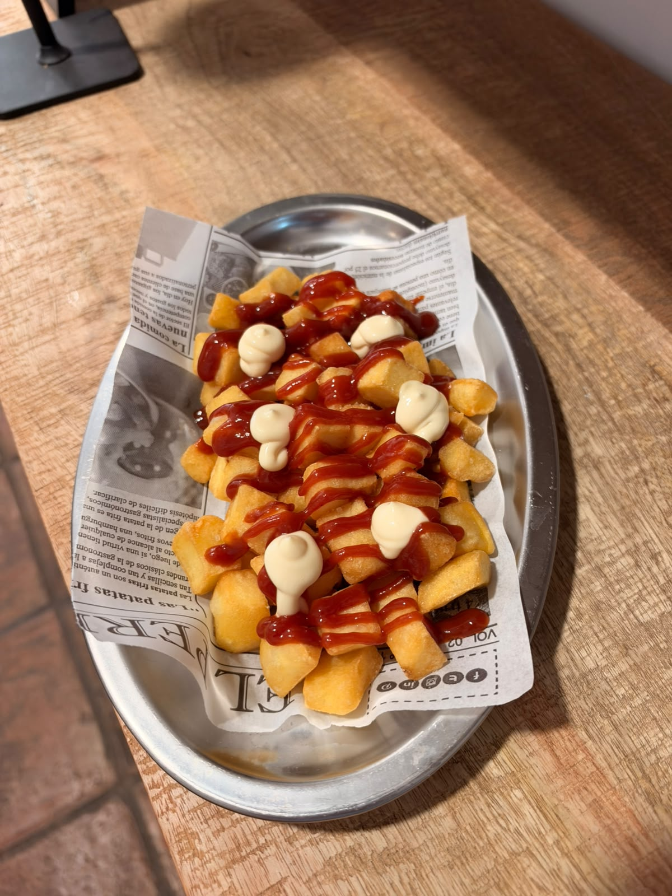
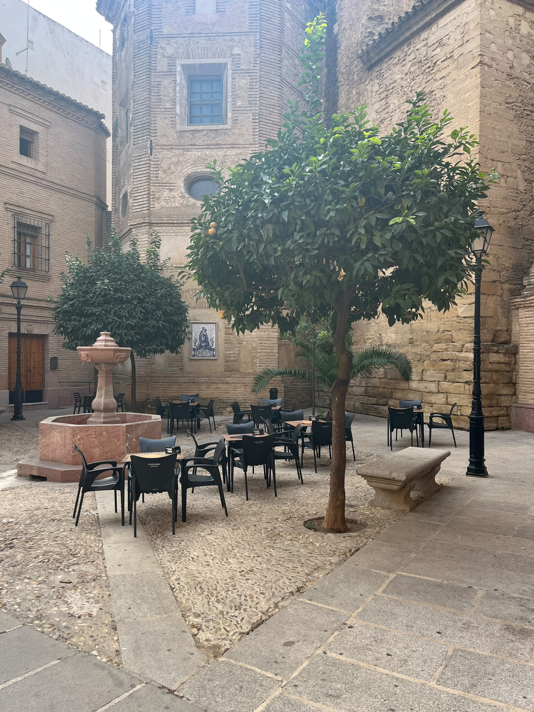
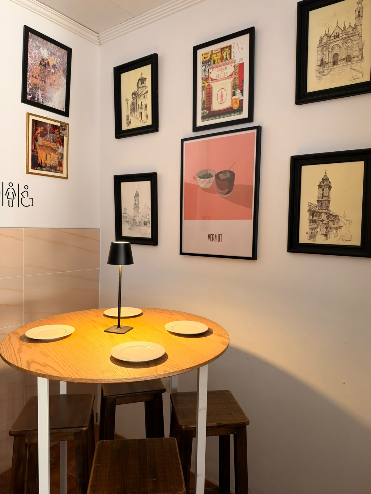
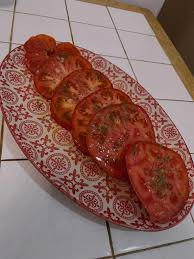
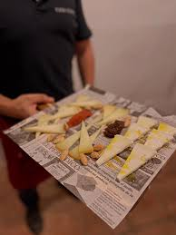
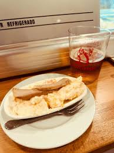
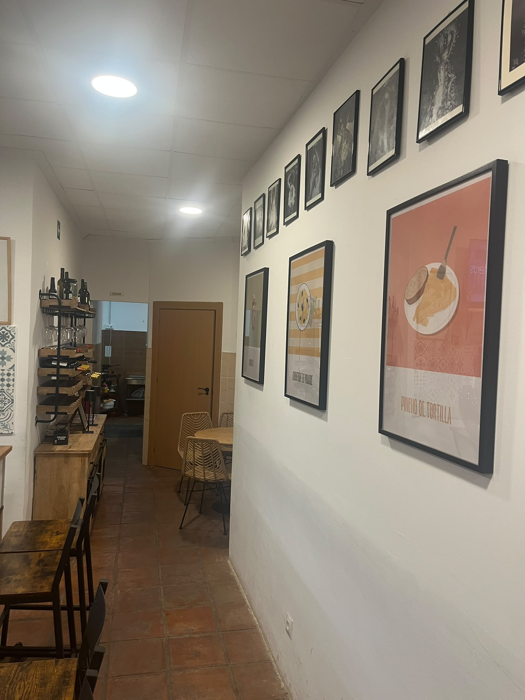
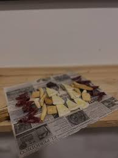
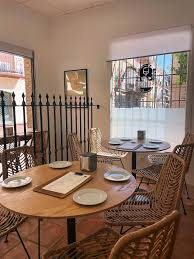
Ubicación
Horario
| Lunes | Cerrado |
| Martes | 20:00 - 00:00 |
| Miércoles | 20:00 - 00:00 |
| Jueves | 13:00 - 16:30 y 20:00 - 00:30 |
| Viernes | 13:00 - 16:30 y 20:00 - 01:00 |
| Sábado | 13:00 - 16:30 y 20:00 - 01:00 |
| Domingo | 13:00 - 16:30 |
Opiniones
Sensacional establecimiento en pleno centro de la localidad. Dispone de barra para tapear,...
Miguel Sanchez Sanchez ★★★★★
Típico sitio con una carta de las que a todos nos gustan, todo buenísimo, buena atención y trato y sobre todo a muy buen precio...
mcg ★★★★★
Una bodega, tipo abacería podríamos decir, donde disfrutar de una buena y fría cerveza o vino entre amigos...
Juande Peramos ★★★★
Buen servicio,personal muy agradable. Comida muy buena.
Natalia Vegas Perdiguero ★★★★★
Muy buen ambiente, trato muy agradable por parte de Javi y Felix, sin duda para volver a repetir
Maria Pilar Garrido ★★★★★
En primer lugar el servicio es de primera categoría: amables, simpáticos y con don de gentes...
Pablo Vegas Castillo ★★★★★
Un lugar para repetir, sin duda alguna. El trato del personal ha sido maravilloso, la comida muy buena y el ambiente ideal.
Rosana Romero ★★★★★
De 10 estuve con mis amigos; comimos y nos atendieron genial,
Salvador Ruiz García ★★★★★
Lugar muy agradable y con una comida de primera calidad, con un trato inmejorable tanto por Paco, Félix y Javi...
Ana Belén Gutiérrez Martos ★★★★★
Buen ambiente y muy buena comida. Buen sitio para tapear o raciones
José María Tortosa ★★★★★